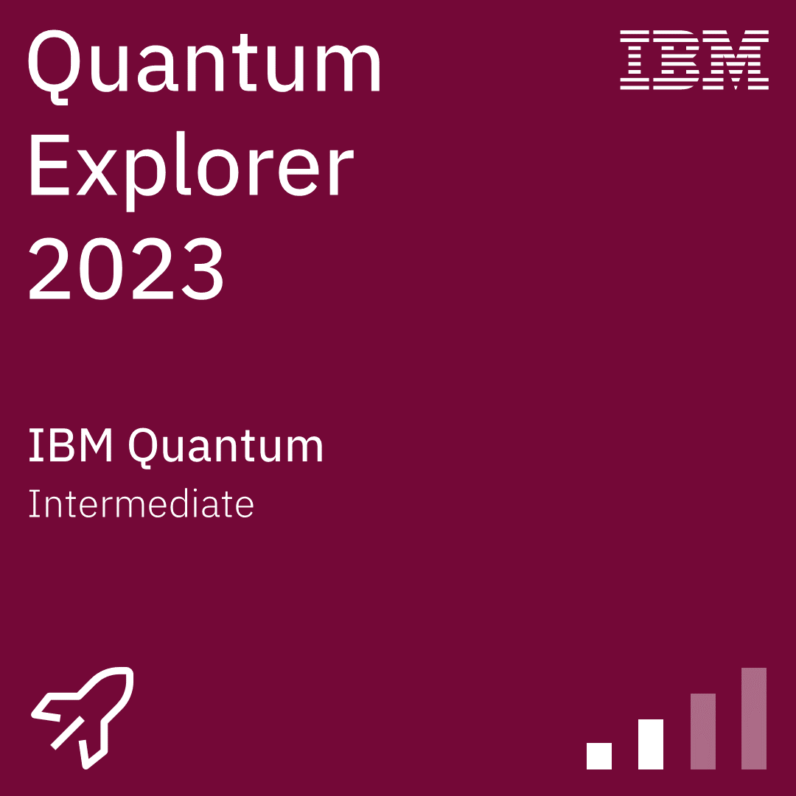
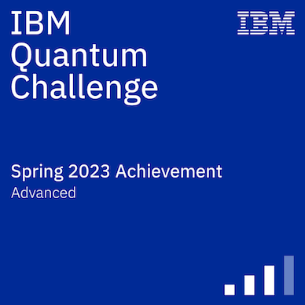
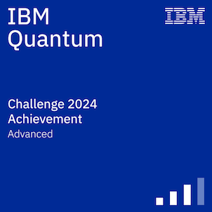
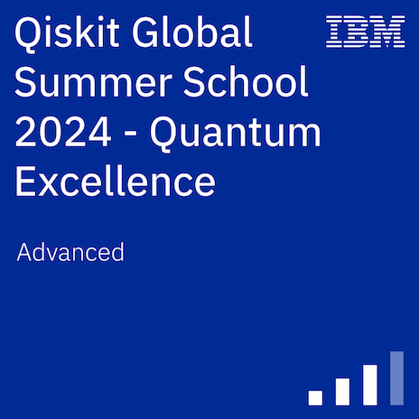
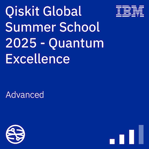
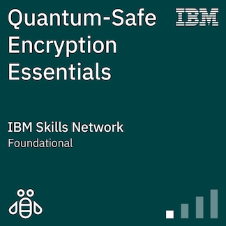
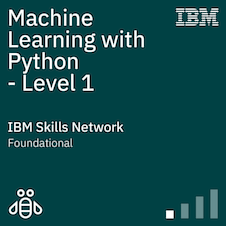
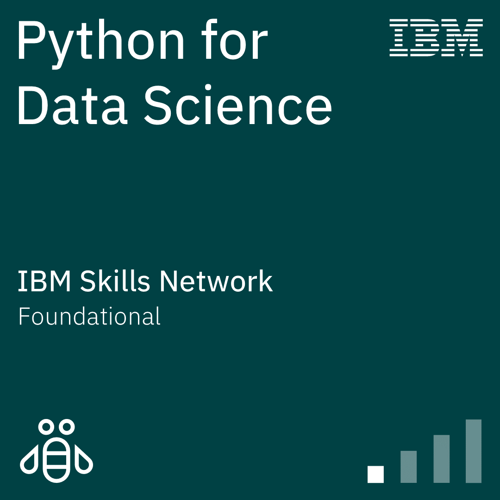

About Me
Hello, I'm Shreya Palase,welcome to My Portfolio ,I hope you find My Project and achievements meaningful and inspiring.
I am a passionate Computer Science enthusiast with a strong interest in Quantum Computing, quantum mechanics, and next-generation computational technologies. I am deeply fascinated by how quantum principles can redefine computation and security in the digital era.
My core areas of interest include quantum algorithms, quantum information theory, quantum circuit design, and quantum cryptography. I have been building a strong foundation in mathematics, linear algebra, and computer science while working with Python and Qiskit for quantum simulations and experimentation.
I am particularly interested in quantum cryptography, including concepts like quantum key distribution (QKD) and secure communication systems that leverage the principles of quantum mechanics to ensure unbreakable encryption.
Alongside theoretical learning, I focus on practical implementation by developing small-scale projects such as quantum circuit simulations and algorithm demonstrations.
My long-term goal is to contribute to advancements in quantum technologies and intelligent computing systems. Thank you for visiting and recognizing the hard work reflected in my acheivements!
Quantum Projects
A collection of quantum computing simulations and algorithmic experiments built using Python and Qiskit.
QAOA Based Satellite task scheduling Under Visisbility control
This project implements a Quantum Approximate Optimization Algorithm (QAOA) using Qiskit to address the satellite task scheduling problem under visibility constraints. The scheduling task is formulated as a combinatorial optimization problem, where the objective is to optimize task allocation within limited visibility windows. The implementation demonstrates how quantum optimization techniques can be applied to structured scheduling problems in a simulated environment. This implementation developed for educational and demonstration purposes for conceptual understanding and practical use of QAOA in Qiskit.
Open ProjectGrover Search Algorithm
This project implements Grover’s Search Algorithm using Qiskit to demonstrate quantum search over an unsorted solution space. The algorithm prepares a superposition of all possible states and uses a quantum oracle to mark the target solution, followed by amplitude amplification to increase its probability.
Open ProjectQuantum Assiated Anomaly Detection in Noisy Environment Sensor Network
This project explores anomaly detection in noisy sensor network data using a quantum computing approach implemented in Qiskit. Sensor readings are encoded into quantum states, and quantum circuits are used to identify abnormal patterns that deviate from expected behavior, even in the presence of noise and uncertainty.
Open ProjectAdaptive Quantum Message Router
This project implements an adaptive message routing framework using quantum computing concepts with Qiskit. It models message routing in a network as an optimization problem, where routing decisions are dynamically adjusted based on network conditions such as congestion, delay, and node reliability.
Open ProjectBB84 protocol implementation with clean channel
This project implements the BB84 quantum key distribution (QKD) protocol using Qiskit, demonstrating secure key e xchange between two parties over a clean (noise-free) quantum channel. The protocol leverages quantum principles such as superposition and measurement to establish a shared secret key while ensuring eavesdropping can be detected.
Open ProjectE91 Style Key Distribution
This project implements the E91 Quantum Key Distribution protocol using Qiskit, based on entanglement-based quantum communication. The system generates entangled qubit pairs and distributes them between two parties to establish a shared secret key, with security ensured by quantum correlations and Bell inequality testing.
Open ProjectCertifications
I have completed official certifications in computer science and quantum computing concepts, strengthening my understanding of both classical and emerging technologies.
Quantum Explorer 2023
Sucessfully Completed Quantum Explorer 2023 by solving Qiskit-based quantum circuit and teleportation challenges,expert talk and hand-on -labs
View CertificateIBM Quantum Spring Challange 2023
Successfully tackled quantum circuit challenges and computations in the IBM Quantum Spring Challenge 2023, earning an official IBM digital badge.
View CertificateIBM Quantum Challange 2024
Successfully completed the IBM Quantum Challenge 2024 by solving advanced quantum computing problems using Qiskit 1.0 on IBM Quantum systems.”
View CertificateQiskit Global Summer school 2024
Completed Qiskit Global Summer School 2024 focused on quantum computing fundamentals and variational algorithms using Qiskit 1.0 through hands-on IBM Quantum labs.
View CertificateQGSS 2025
Completed Qiskit Global Summer School 2025 focused on advanced quantum algorithms and error mitigation using Qiskit through hands-on IBM Quantum labs..
View CertificateQiskit fall fest 2025
Participated in Qiskit Fall Fest 2025, engaging in collaborative workshops and hands-on quantum computing activities using Qiskit.”
View CertificateQuantum Safe encryption
Completed Quantum-Safe Encryption course covering post-quantum cryptography and quantum-resistant security techniques
View CertificatePennylane Certificate Challange
Passed PennyLane Certificate Challenge by solving all quantum machine learning tasks using hybrid quantum-classical models and variational circuits.
View CertificateMachine learning with Python
Completed Machine Learning course by IBM Skills Network, covering fundamental ML concepts and model development using Python..
View CertificatePython for data Science
Completed Python for Data Science course by IBM Skills Network, covering Python basics and core data analysis libraries.
View Certificateprevention of DDos Attack
Completed DDoS Attack Prevention course by BitDegree, covering attack detection and network security mitigation techniques.
View CertificateIntroduction to Quantum computing
Completed Introduction to Quantum Computing course by Cognitive, covering qubits, superposition, entanglement, and basic quantum circuits.
View CertificateOngoing Learning
Continuously improving in Qiskit, quantum algorithms, and cryptography concepts.
Achievements & Quantum Badges
Milestones achieved during my journey in quantum computing and computational learning systems.

Quantum Explorer 2023 (intermideate)
Successfully earned the IBM Quantum Explorer Badge by completing hands-on labs and working with real quantum circuits. Gained practical experience in quantum computing through IBM’s Quantum Explorer Program, earning the official badge.
Intermediate IBM
IBM Quantum Challenge Spring 2023
Successfully completed IBM Quantum Challenge Spring 2023, gaining hands-on experience with dynamic circuits and real quantum processors using Qiskit earning the official badge.
Advanced IBM
IBM Quantum Challenge 2024
Completed IBM Quantum Challenge 2024, gaining practical experience in quantum circuits, Qiskit 1.0, and utility-scale quantum computing concepts. Earn official badge
Advanced IBM
QGSS 2024
Advanced through IBM QGSS 2024, mastering quantum algorithms and executing real Qiskit-based simulations through structured quantum learning labs.
Advanced IBM
QGSS 2025
Immersed in IBM QGSS 2025, mastering quantum algorithms, error correction, and circuit design through advanced Qiskit labs and real quantum system simulations.
Advanced IBM
Quantum safe Encryption(Cryptography)
Explored quantum-safe cryptography frameworks designed to withstand quantum attacks, focusing on post-quantum encryption and next-generation secure communication systems.
Foundational IBM
Machine learning with python
Built foundational machine learning skills using Python, exploring data-driven models, training pipelines, and predictive analysis with Scikit-learn.
Foundational IBM
Python for Data Science
Developed data science fundamentals using Python, focusing on data processing, visualization, and insight extraction from structured datasets.
Foundational IBM
Eminient Scientist
Earned after attending a guest lecture and completing the associated learning tasks, demonstrating understanding of key quantum computing concepts in the IBM Quantum Explorers program.
QE2023
Expert Navigator
Demonstrated ability to navigate and solve intermediate quantum computing challenges using quantum circuits and simulations.
QE2023
Space Combatant
Completed challenge-based quantum tasks involving problem-solving under advanced circuit scenarios and simulations.
QE2023
Supreme Observer
Showed deep analytical understanding of quantum states, measurements, and system behavior through guided experiments.
QE2023
Time Traveler
Progressed through advanced conceptual quantum topics and simulations, exploring time-evolution and quantum dynamics concepts through black hole example with Alice and Bob.
QE2023
Prime Ambassadar
Acknowledged for active participation and contribution in IBM Quantum learning activities and community engagement.
QE2023Blogs / Insight
The cat That Fixes Itself Why Schrödingers Equation is the Universe's only error log in Quantum
Read on Medium →The Software bottleneck nobody warned us About in Quantum Computing
Read on Medium →The Pulse of reality Geometric logic and the mastery of probability in 2026s quantum gateways
Read on Medium →Can Atomic Clocks and Quantum Computing Together detect the Secrets of Time
Read on Medium →Invisible or Indispensable the Secret Life of Quantum Phase
Read on Medium →Quantum Supremacy Computers Enter the Impossible Zone
Read on Medium →Quantum Cryptography Make your Data Quantum Proof
Read on Medium →The Krylov Method a Classical math trick shaping a new vision for quantum computing/h3> Read on Medium →
Quantum Algorithm Memory Tricks visual code guide for qiskit programmers
Read on Medium →Demystifying the Born Rule a step-by-step guide to quantum measurements
Read on Medium →Introduction to Eigenvalues and Eigenvectors the dynamic duo behind quantum magic
Read on Medium →There are many more blogs like this—please visit my Medium profile to explore them.
Explore More blogs →Skills
As a beginner in Quantum Computing and Computer Science, I am building a strong foundation through structured learning, simulations, and hands-on practice in quantum and classical computing.
Programming
Python • Qiskit • Problem Solving •Pennylane
Quantum Basics
Qubits • Superposition • Entanglement • Measurement
Quantum Circuits
H, X, Z Gates • Circuit Design • Qiskit Simulations
Quantum Algorithms
Grover (Learning) • Shor (Conceptual)
Quantum Cryptography
BB84 Protocol • QKD Basics • Secure Communication
Mathematics
Linear Algebra • Probability • Complex Numbers
Tools
Qiskit • GitHub • VS Code • Linux Basics •Pennylane
Learning Mindset
Curiosity Driven • Consistent Practice • Problem Solving Focus
Resume / CV
Download my latest Resume / CV to view skills, projects, and achievements.
⬇ Download CV